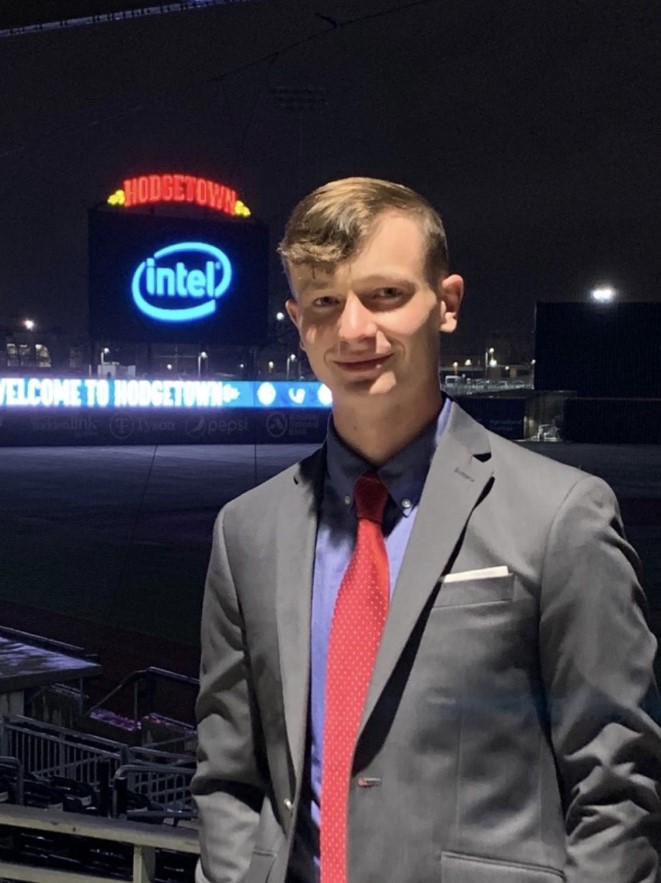

About Me
My name is Lance Fletcher and I am a Master's computer science student at
Texas A&M University. I am passionate about developing new technologies
and tools to solve unique and challenging problems.

Research Interests
- ML/AI: Specifically in ML/AI applications and human interaction.
Awards
- 1st Place Undergraduate Research Oral Presentation: 2022
- Kilgore Undergraduate Research Grant Recipient: 2019
- Supplemental Instructor of the Year: 2021
- 8x WTAMU President's List Honoree: 2018-2022
- 2x WTAMU College of Engineering Scholarship Recipient: 2020-2022
- WTAMU College of Engineering Egg Drop Champion: 2021